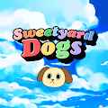 Sweetyard Dogs 甜园狗元宇宙 启动！ 在以太坊区块链上随机生成的 10,000 个甜园狗 NFTs 集合。 当你购买甜园狗 NFT，就等于获得进入甜园狗元宇宙的凭证，在甜园狗元宇宙，每一只
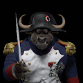 SwingSwiss - Pioneer SwingSwiss 的 1,000 个终生访问权限集合 - 围绕一个完全集成的解决方案构建的完整加密投资生态系统。 持有人将终生使用我们所有的产品。 他们将解锁 Companion
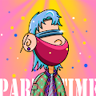 Tatols NFT 一群来自中国的年轻人在WEB3世界的一次尝试，大头大头，不愁下雨。Tatols NFT NFT - 常见问题（FAQ） ▶ 什么是 Tatols NFT？ Tatols NFT 是一个 NFT（不
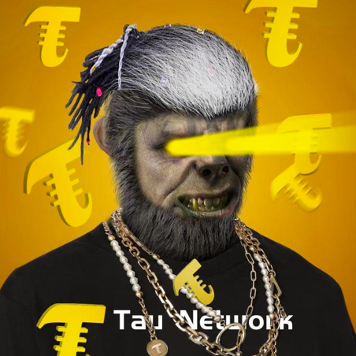 Tau Honey Badger 世界上第一个连接 Pi Network 的跨链协议。 TAU蜜獾8小时后，将启动最后一批Tau Honey Badger盲盒的造币，1个月内从盲盒中揭示出独特而精致的NFT。
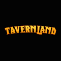 Taverns in Tavernland Tavernland 是一款基于网络的革命性 NFT 角色扮演游戏，在以太坊上推出。游戏的核心围绕在完成任务、在酒馆工作、交易商品和收取费用后，用金酒馆代币奖励玩家。酒
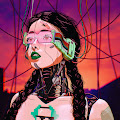 TECHNOCULT 在元宇宙中发现超自然现象。TECHNOCULT NFT - 常见问题（FAQ） ▶ 什么是技术崇拜者？ TECHNOCULT 是一个 NFT（不可替代代币）集合。存储在区块链上的
Teddy Bear Squad Cubs 路线图 1层 TBS 去月球🚀 6767 只独特的泰迪熊被释放（其中 150 只保留给团队和赠品）。根据您持有的泰迪熊数量，您每 24 小时可以领取我们的 $TOYS 代币。 2级 回报 我们
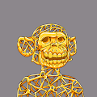 Teen Ape Gang Mutants (TAGM) Teen Ape Gang Mutants (TAGM) 是由 1,100 个独特的突变角色组成的私人收藏，灵感来自我们原创且已售罄的收藏。每个 Ape 的所有权证明作为 ERC-721 不可替代令牌 (NFT) 存储在以太坊网络上。T
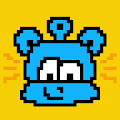 Tejiverse 由 JET WILLIAMS 制造的 LiL RANDOM TEJI NFT。不断发展、不断学习的外星人。TEJIVERSE NFT - 常见问题（FAQ） ▶ 什么是 TEJIVERSE？ TEJIVERSE 是一个 NFT（不
Tembo Guardians Official Collection Tembo Guardians Genesis 是一个手绘的 2222 NFT 全部合集，创建了一个名为 Thoalea 的 P2E 基地建设 PVP 游戏，该游戏建立在 NFT Worlds 之上。与你的派系中的 Tembos 一起玩 Thoalea，收集资源，建
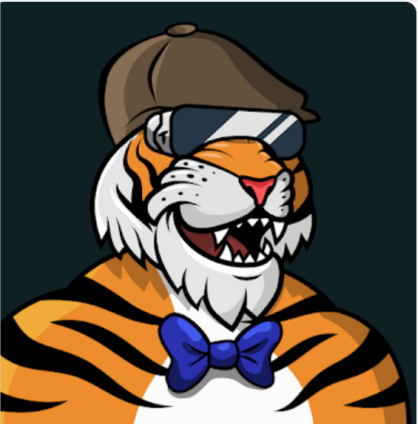 Tenacious Tigers 这一年是 2025 年，顽强的老虎队已经接管了 Meta-Jungle。这 10,000 只随机生成的独特手绘老虎已经演变成具有自己独特的风格和个性。顽强的老虎NFT
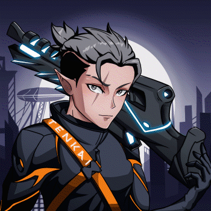 Tenkai | Rebels Tenkai 不仅仅是一个 NFT 项目或一个品牌。Tenkai 是一个社区。 成为进入天堂的 5.000 名叛军之一！ 我们是我们生活各个角落发展元界和 web3 集成的坚定支持者。我们
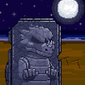 Tensei Turtles Official Tensei 龟部落是在 ETH ERC721 上转世的 333 个创世 NFT 的集合。在大陆被凶猛的恐龙捕食后，提西龟部落逃到了艾萨岛。一天，一个神秘的烧瓶被冲到海滩上，里面的东西似乎
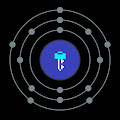 Tenth Key Sample Series 带有免版税样本许可证的节拍和音乐创作的集合。这些 NFT 的所有者可以在自己的音乐作品中使用与他们拥有的 NFT 相关的声音和词干。第十个关键样本系列 NFT - 常
tern.crypto / Community icons tern.crypto / 社区图标集合了 120 个独特的粉丝绘制的图像，这些图像来自社区，受比赛启发。每件艺术品都是原创的，有自己的调色板和创作。您仍然有机会与我们一起
Terra Virtua Terra Virtua NFT - 常见问题（FAQ） ▶ 什么是 Terra Virtua？ Terra Virtua 是一个 NFT 标记（不可替代）集合。在区块链上的数字收藏品集合。 ▶ 有多少 Terra Virtua 代币？ N个Ter
Terroir by Kelly Milligan 石灰石、石英和粘土的碎片。古老的生长和打结的谷物。火花冒烟。我们的星星在高处。气候、土壤和地形。在此处了解有关此系列的更多信息Kelly Milligan NFT
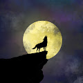 Test Wolves 9 赢这个 克尔维特 Z06 3LT 我们将这辆 Corvette 赠送给 Omega Wolves NFT 的随机所有者 感谢我们的赞助商汽车野心一群狼刚刚结束了狩猎，但他们狩猎的那天晚上有些不对劲。他们注意
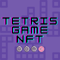 Tetris Game NFT 怀念童年吗？NFT 可以直接在 Opensea 上玩。生活在以太坊区块链上的 2000 年俄罗斯方块游戏 NFT 的集合。非常简单的俄罗斯方块游戏 NFT 的规则：您只能以特定方式移动
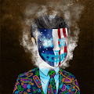 The $ecret $ociety $ecret $ociety NFT - 问题常见（FAQ） ▶ 什么是 $ecret $ociety？ $ecret $ociety 是一个 NFT（不可替代币）集合。存储在区块链上的数字收藏品集合。 ▶ 存在多少$ecre
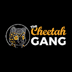 The Cheetah Gang V2 炫目帮 V2 Glizzy Gang 是 5555 Glizzy 的集合。每个 Glizzy 每天生成 5 $Mustard，即 Glizzyverse 实用代币。没有质押。别大惊小怪。 育种现已上线。您可以使用 $Mustard 来培育您的 gizz
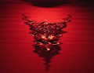 The Comfy Collection Comfy Collection 是在 ComfyDevil 的manifold.xyz 合同（已验证）上铸造的基于摄影的艺术。 恶魔钥匙是解锁 ComfyDevil 摄影艺术所需的令牌。 为那些在阴影中寻找光明的好奇者
The Crazy Survivors Crazy Survivors 集合了 7676 名幸存者，按稀有度排名，让您可以在现实世界和元宇宙中进行独特而独特的寻宝活动。 疯狂幸存者 NFT - 常见问题（FAQ） ▶ 什么是疯狂的幸存
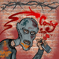 The Cryminals OG Cryminals 将窃取价值超过 250,000 美元的 NFT，他们正在分享战利品！查看 thecryminals.com 了解详情！ Metacity永远不会是一样的。启示录已经消灭了所有的哭泣者。虚拟的街
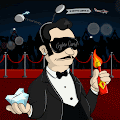 The Crypto Cartel V2 CryptoCartel 是一个由 3,500 名国际知名加密货币富豪卡特尔成员组成的网络，他们退休并在以太坊区块链上焕发了新的活力。 为热爱、投资和持有加密货币和 NFT 的人而设的会
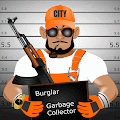 The Crypto Mafia Crypto Chicks 10k系列于2021年9月推出，代表了Web3大胆，时尚的女性。我们以女性为首的领导团队致力于建立一个全球品牌和社区，在各种Web3旅程
The CryptoSaints 加密货币的每一次旅程都是公共的。 通过地毯和月亮，我们共同团结起来，在我们的 CryptoSaints 中找到 hopium。受文化影响，每个 CryptoSaint 都具有尊重我们共同历史的独
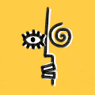 The Cubists by Lorenzo Lozini The Cubists 是一个生成艺术收藏品，灵感来自毕加索、布拉克、达利、蒙德里安和波洛克等艺术家。 由艺术家 Lorenzo Lozini 创作的 5,555 个 NFT 作品 Lorenzo Lozini NFT 的立体派 - 常见问题（FA
The Cult DAO Ethereum CULT DAO (CuID) 不仅仅是一个精选艺术品的集合，我们是一个 NFT 爱好者社区，所有者可以在其中利用整个加密货币世界的投资机会。 一 (1) 个 CULT DAO NFT 的所有权作为 CULD 社区的
The Daily Gwei - 1 Year Anniversary NFT 为 The Daily Gwei 的一周年纪念日，365 个版本由 _kitteh 创建的庆祝 NFT 铸造，描绘了 Anthony Sassano 的梦幻工作站。 80% 的收益用于以太坊核心开发。 The Daily Gwei - 一周年 NFT 的总销售额为 307.38
The Decentralized Living Album On The Blockchain 这张去中心化专辑是生活在以太坊区块链上的不断变化的音乐 NFT。 每月刷新元数据以获得新音乐和独家访问商品掉落、节目等！ 由 ChillRx（@ia
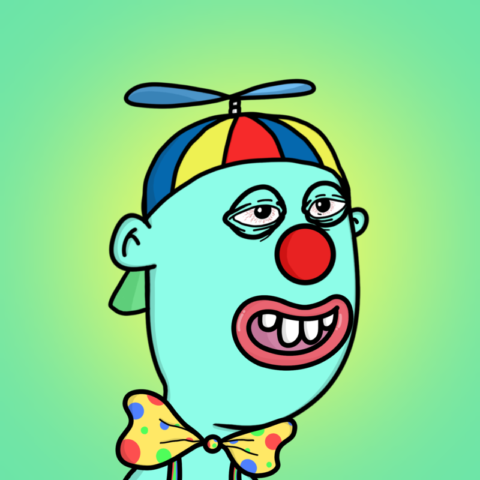 The Dingalings 以太坊区块链上的 10k doofuses 渴望向您展示他们的 Dingalings The Dingalings NFT - 常见问题（FAQ） ▶ 什么是 The Dingalings？ Dingalings 是一个 NFT（非同质代币）集合。 存储在区
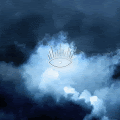 The Divine NFT The Divine 是 4,477 名手绘、宇宙、天使战士的集合，他们保护和培育他们领域可观察宇宙中的所有美好事物。他们由无所不能的 Arc 引导和创造，并居住在天堂中。 来自天
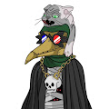 The Docs 我们的主要活动！一旦我们到达路线图的终点，我们将举办一次千载难逢的体验。 前 100 个 Doc NFT* 已经被铸造出来，用于赠品和独家活动。其余的将在发布当天在 Polygon
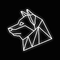 The Meta Rich Collection Meta Rich Collection 统计数据 创建于 8 个月前，1,298 代币供应，7.5% 费用 15,075 名 Discord 成员 过去 7 天没有售出 Meta Rich Collection。 Meta Rich Club 是以太坊区块链上 5,000 个
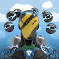 The Metaversus - BUGGED DONT BUY Metaversus - BUGGED DONT BUY 统计 创建于 6 个月前，39 代币供应，5% 费用 过去 7 天没有售出 The Metaversus - BUGGED DONT BUY。 Metaversus 是 8888 个 NFT 的集合，集成到 Metaversus 战斗竞技场中。这些先进的袖子
The Metaversus Arena Metaversus 竞技场数据 创建于 6 个月前，373 代币供应，7.5% 费用 过去 7 天没有售出任何 The Metaversus Arena。 Metaversus 是 8888 个 NFT 的集合，集成到 Metaversus 战斗竞技场中。这些先进
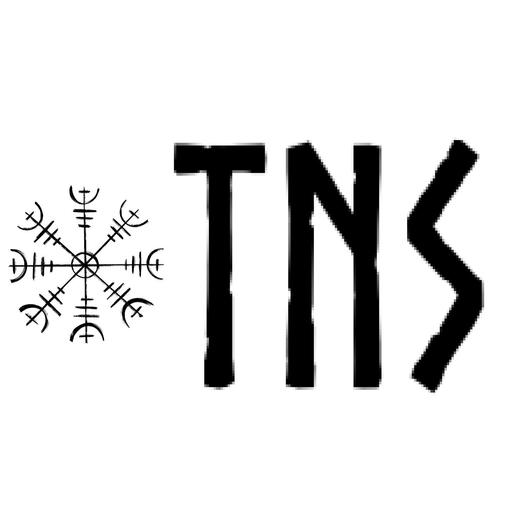 The Nordic Society NFTs 这就是北欧社会！ 这是我们精英氏族维京战士协会的名称。 我们生来就是为了突袭、征服和扩展整个 WEB3。 我们吵架！！ 我们盛宴，我们喝酒！ 斯科尔尔！
The Possessed By Pssssd Labs 创造力我们相信每个出生的人都拥有创造力。当我们 3 岁时，我们的想象力、好奇心和创造力空前高涨。随着我们年龄的增长，它是由我们教育出来的。我们相
The Seagull Finds His Talent AlphaBetty NFT 中的 1,000 多个 ETH 已在二级市场上交易，Betties 由 3,000 多名独特的所有者持有，其中包括名人、专业运动员、知名社交媒体影响者以及大量 Apes、C